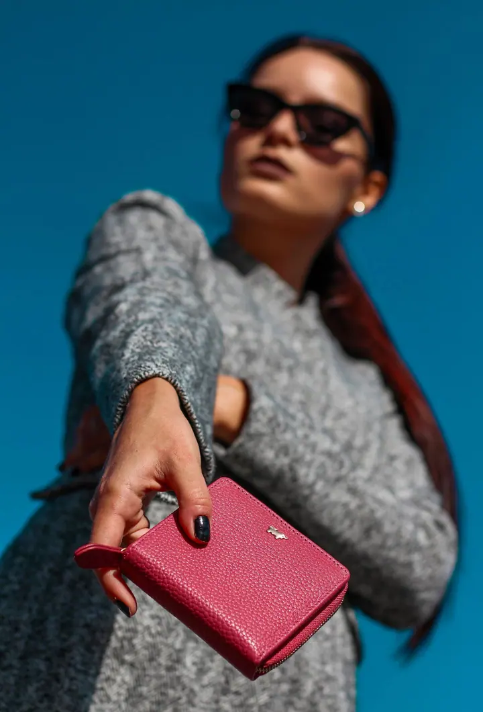
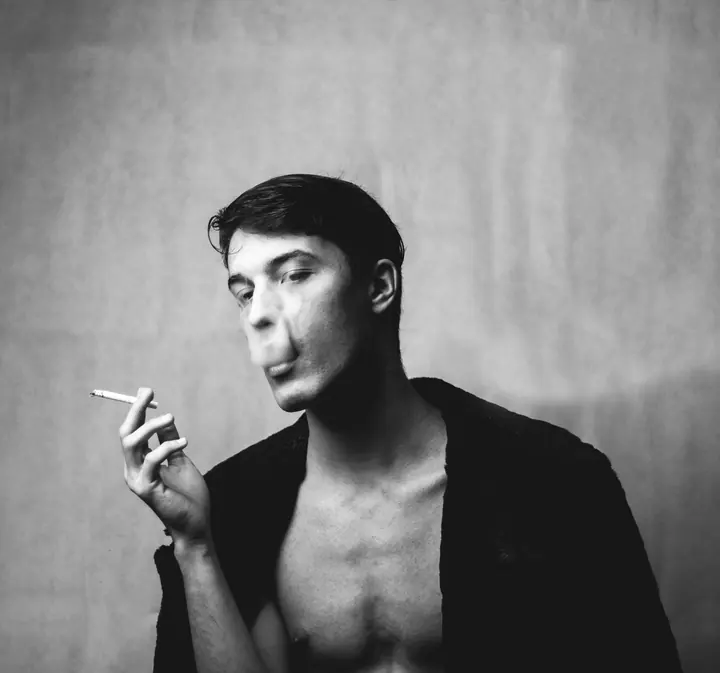
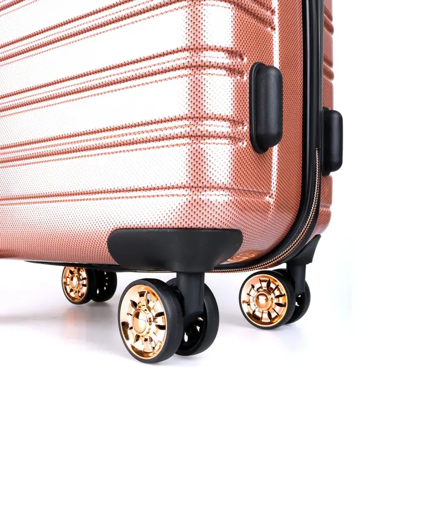
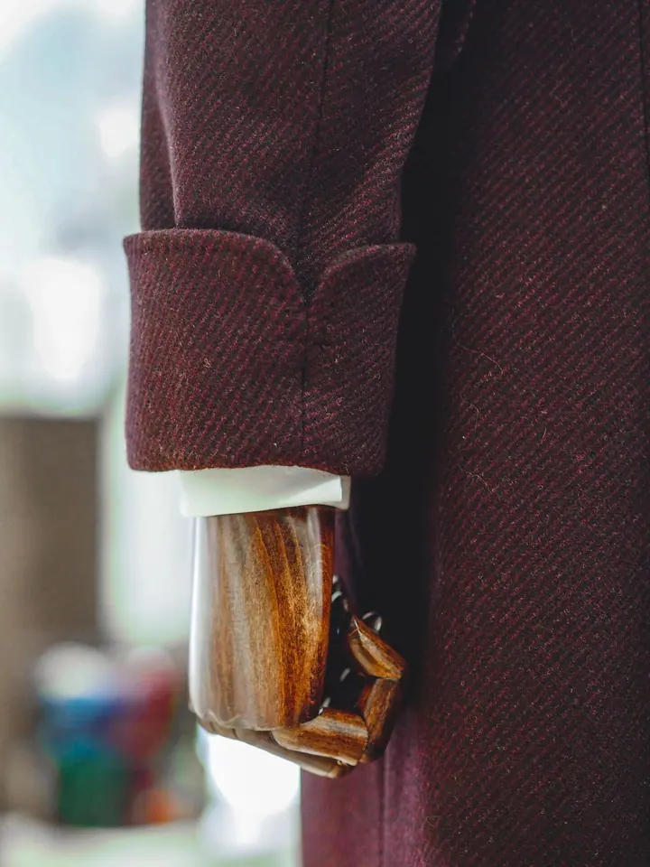

01 / 04
Produktová fotografie
Fotím produkty pro e-shopy, značky i reklamu. Od čistých snímků na bílém pozadí po barevné aranžované scény.
Zeptat se na termín→





Produkty a móda v plných barvách
Zeptat se na termín →(01) Ahoj
Jmenuji se Martin Suchánek a jsem fotograf a kameraman. Fotím hlavně produkty , portréty a módní editorialy a s kamerou i foťákem chodím také na akce a přehlídky .
(02) Co dělám
01 / 04
Fotím produkty pro e-shopy, značky i reklamu. Od čistých snímků na bílém pozadí po barevné aranžované scény.
Zeptat se na termín→02 / 04
Portréty a módní editorialy v ateliéru i v ulicích. Barevně, nebo černobíle a s výrazným světlem.
Zeptat se na termín→(04) Postup
Od první zprávy po hotovou galerii.
Krok 1 z 4
Napište mi, co potřebujete nafotit nebo natočit, kolik produktů máte a k čemu budou fotky sloužit.
Krok 2 z 4
Společně domluvíme styl, pozadí, barvy a případně modely, aby fotky seděly k vaší značce.
Krok 3 z 4
Nafotím produkty na bílém pozadí nebo v aranžované scéně, podle domluvy v ateliéru nebo v exteriéru.
Krok 4 z 4
Vybrané fotky upravím a předám vám je připravené pro e-shop, sociální sítě i tisk.
Barvy, světlo a detail, který prodává.
(05) Za objektivem
Nejvíc mě baví produktová fotografie. Ať jde o tenisky, hodinky, kabelku nebo lahev, hledám světlo a barvy, díky kterým věc na fotce vynikne a má svůj charakter.
Rád fotím i lidi. Portréty a módní editorialy dělám barevně i černobíle, v ateliéru i venku ve městě. Často spojuji obojí a produkt nafotím přímo na modelce nebo modelovi.
Kromě focení natáčím i video a fotím akce, módní přehlídky, jídlo nebo architekturu. Když potřebujete fotky i video pro svou značku, můžete vše vyřešit se mnou.
Martin
Martin Suchánek · Produktový a módní fotograf a kameraman
Produktové focení začíná od 2 000 Kč, portréty od 1 200 Kč. Přesnou cenu vám řeknu podle počtu produktů a rozsahu zakázky.
Ano. Produkty fotím samostatně i na modelech, třeba kabelky, peněženky nebo oblečení v módním editorialu.
Ano, kromě fotek natáčím i video. Fotky i záběry pro vaši značku tak můžete mít z jednoho natáčení.
Termín předání domluvíme předem podle rozsahu zakázky a toho, kdy fotky potřebujete.